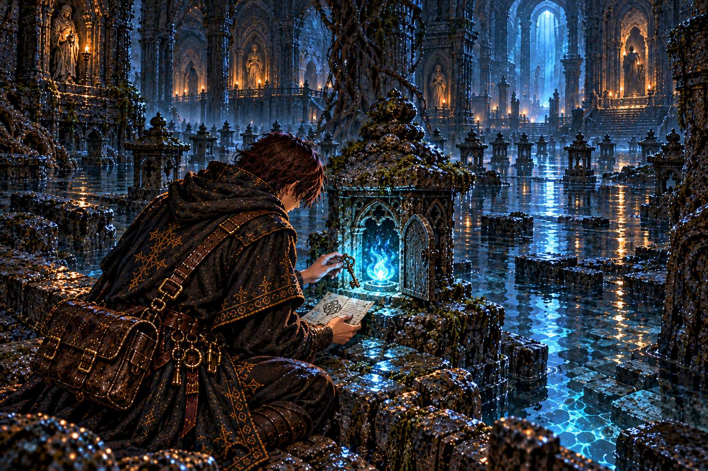
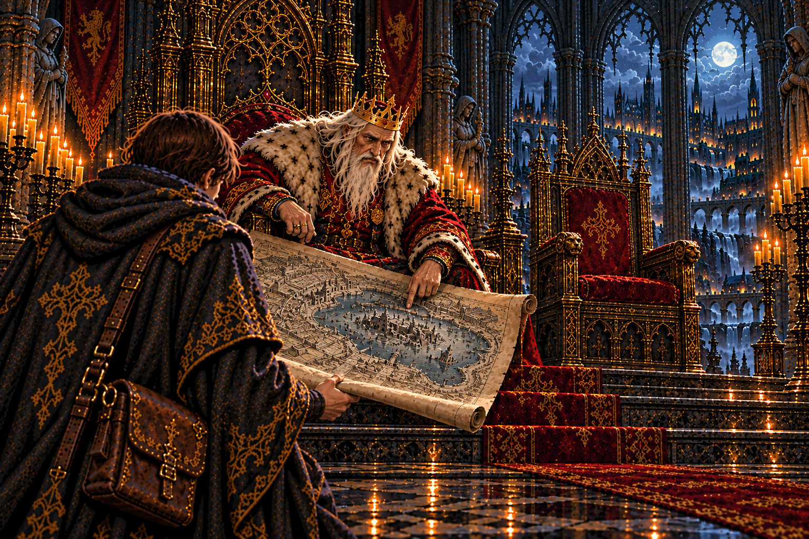
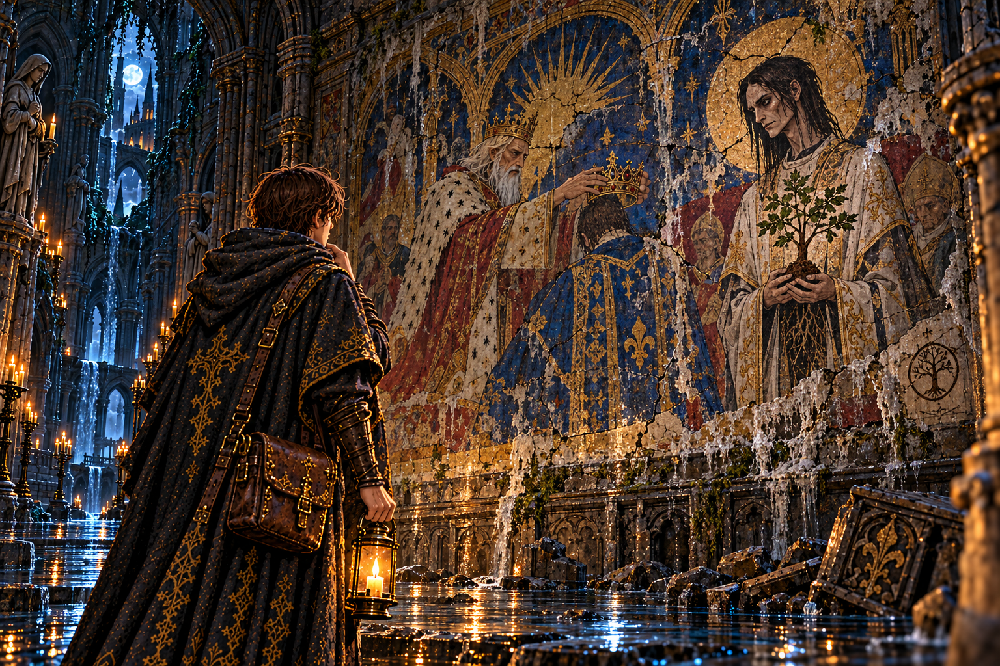
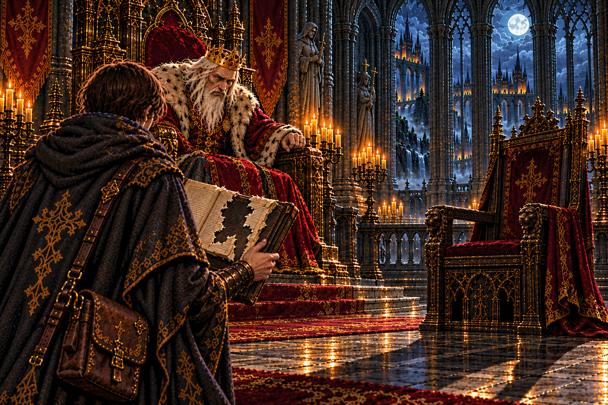
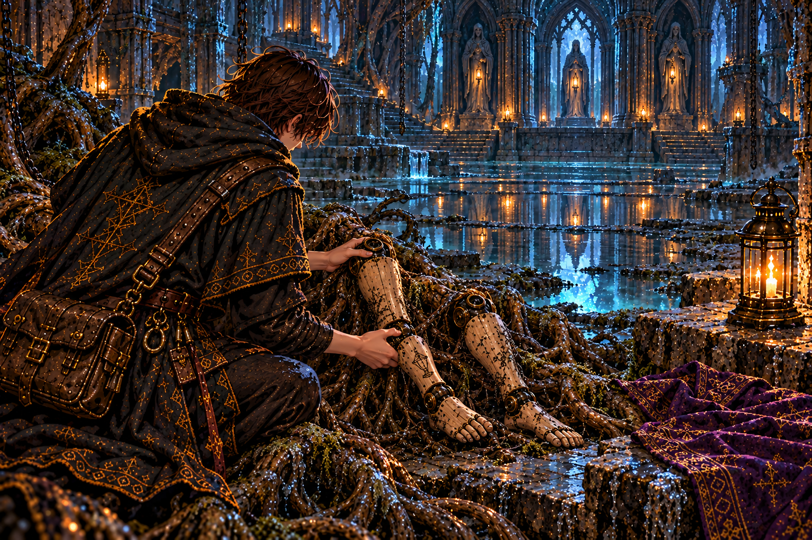
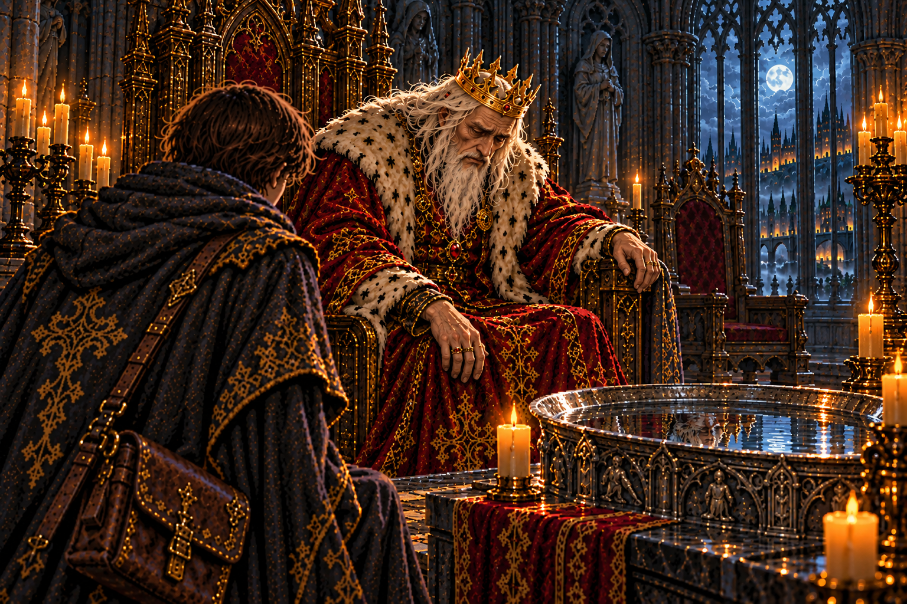
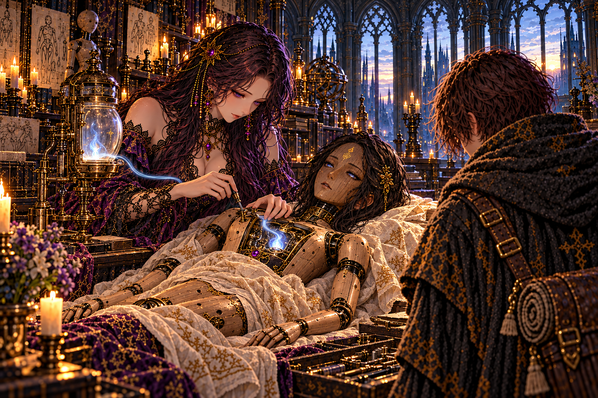
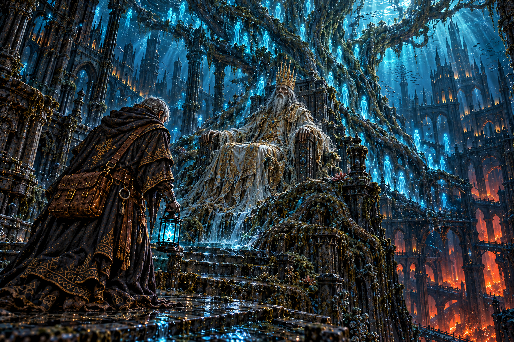
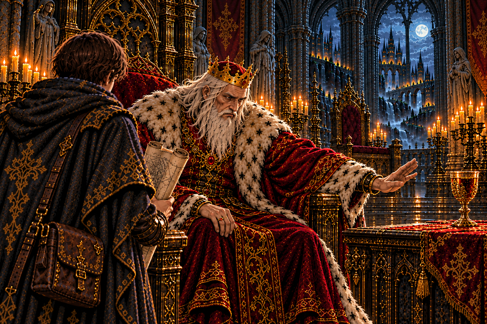
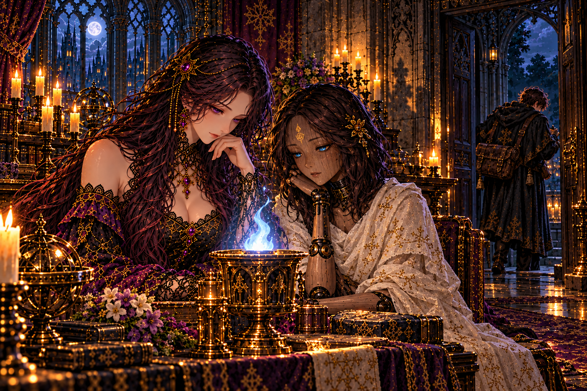

水底に残された灯


沈んだ参道には、石の灯籠が奥へ向かって並んでいた。水に浸かった灯籠のうち、一つだけが青白く光り続けていた。
火袋の中から出てきたのは、聖歌の回廊へ抜ける鍵と、師の短い書きつけだった。師は先へ進みながら、後から来る者の道も残していた。
書きつけの最後には、流されたセラの脚のことがあった。師は自分の旅の途中でも、裂かれた人業を忘れていなかった。弟子は鍵を握り、回廊の方角を確かめた。

沈んだ参道には、石の灯籠が奥へ向かって並んでいた。水に浸かった灯籠のうち、一つだけが青白く光り続けていた。
火袋の中から出てきたのは、聖歌の回廊へ抜ける鍵と、師の短い書きつけだった。師は先へ進みながら、後から来る者の道も残していた。
書きつけの最後には、流されたセラの脚のことがあった。師は自分の旅の途中でも、裂かれた人業を忘れていなかった。弟子は鍵を握り、回廊の方角を確かめた。

参道の話を聞いた王は、王都が古い都の上に築かれたという言い伝えを口にした。それは三百年前、王が生まれるより前の出来事だった。
毎日歩いている石畳の下に、水に沈んだ都がある。王宮も街も、誰かの終わった暮らしの上に建っていた。
王は洗礼の大水槽への道を開かせた。空いたままの宰相の席を、弟子は一度だけ見た。

回廊の壁には、旧都の戴冠を描いた絵が残っていた。冠を受ける王の脇に、苗木を抱えた若い神官が描かれている。
その顔を見て、弟子は息を止めた。王宮で何度も見た宰相モルデンと、一つも変わらない。三百年分の時が、その顔にだけ触れていなかった。
絵の隅に師が書き残した問いは、答えを持たないまま壁に残っていた。弟子は同じ問いを胸にしまい、回廊の奥へ進んだ。

回廊の話を伝えると、王は肘掛けを握った。旧都の王の脇に控えた神官の名は、記録のどこにも伝わっていないという。
三百年前の記録だけが抜き取られている。誰かが消したのだとすれば、それは記録を扱える場所にいた者だ。
王はそれ以上を口にしなかった。玉座の間に、空いた宰相の席の影が長く伸びていた。

水の引いた大水槽の底で、根の筋が人業の脚を抱えていた。黒鉄の継ぎ目と、くるぶしの印が、セラのものだと告げていた。
脚には細い傷がいくつも残っていた。流れに運ばれながら、根の中を自分の足で進もうとした跡のように見えた。
頭、腕、胴、そして脚。別々の迷宮で拾い集めたものが、これで一人の形になる。弟子は脚を丁寧に包み、館への帰り道を急いだ。

大水槽は、旧都の王が民の魂を守ると誓って身を清めた場所だった。王はその話をしながら、自分も同じ誓いを立てたことを明かした。
そして百年前に、その誓いを破ったことも。王の声は低かったが、言葉を選んで隠すことはしなかった。
破った誓いの重さを、王は誰かに預けようとはしなかった。弟子は黙って聞き、館で待つ台のことを思った。

セラの体がそろっても、魂は師の灯に結ばれたままだった。イレーヌが手に取ったのは、弟子が最初の迷宮で拾ったランタンだった。
硝子の中の青白い火は、ずっと師の一部として揺れていた。イレーヌは一晩をかけて継ぎ目を締め、夜明け前、火はセラの胸へ移った。
目を開けたセラが最初に尋ねたのは、師の行方だった。答えを聞くと、彼女は自分も行くと言った。旅の荷に、帰ってきた仲間の分が加わった。

神官王の魂がほどけると、弟子は三百年前の戴冠の夜を見た。泉に苗木が植えられ、抜けという命令の後に、都は水へ沈んだ。
王は冠をかぶったまま、水の底で苗木が幹になるのを見続けていた。止められなかったものを、見届けることしかできなかったのだ。
一年前、幹を昇ってきた師はその王に頭を下げ、木の心臓が樹液を煮詰める釜にあると見抜いた。そして、熱い風の吹く底へ降りていった。

神官王の記憶を伝えると、王は宰相が仕えてきた年月を数えるのをやめていたと言った。祖父の祖父の代よりも、さらに前から。
毎朝差し出される杯が、どこで煮詰められているのか。王はそれを知って、杯を遠ざけた。
王は神殿の底へ降りる許しを出した。行き先は火の洞。弟子は、師がそこで何を見たのかを確かめに行く。

館の燭台の前で、イレーヌはセラのそばに座っていた。灯を見守る目が、少しずつ増えていく。
王都の足元に沈んだ都を見て、弟子は自分たちの暮らしの下にある長い時を知った。三百年前に植えられた苗木は、いまも一人の男の手で育てられている。
師は火の洞へ向かった。追う理由は増えたが、帰る場所もまた温かくなっていた。弟子は次の支度にかかった。